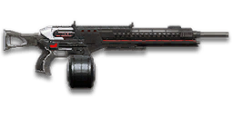

← Back to the TMG-50 comparison
Sage Guide · Terran Republic · Heavy Assault
The Terran Republic's hard-hitting LMG — a 1,000-cert purchase that trades the CARV's fire hose for 167-damage bullets and the tightest aimed cone of any TR LMG. This page teaches you to win fights with it today.
The one-line verdict: the TR twin of the NC's GD-22S — identical damage, fire rate and time to kill — but with a 75-round magazine, a slower reload, and recoil that climbs straight up. It rewards good aim and short bursts, and punishes spray-and-pray. Fight between 15 and 50 metres and it will carry you.

The TMG-50 · Terran Republic · 75-round box magazine
Picture the scene, because you've probably lived it: you're sprinting across a courtyard, an enemy appears, and you do everything at once — hold the trigger down while you're still running, then press aim-down-sights (ADS) a split-second later, finger still down. The sight picture snaps in, it looks precise… and your bullets spray everywhere except the man in your crosshair. He kills you. It feels like the game cheated. It didn't — here's what actually happened.
You started firing from a sprint, from the hip. Sprinting is the least accurate state in the game: your cone of fire starts at 7.0° — fully bloomed, the widest it can ever be. Every shot you fire from the hip widens it further still (+0.12° per shot).
Then you pressed ADS mid-hold — and nothing reset. Aiming down sights does not shrink a cone of fire that is already bloomed. The scope only gives you a precise picture; the bullets keep flying out of the wide cone you built while running and hipfiring. That's the whole mystery: accurate-looking aim, wildly inaccurate gun.
Two timers stack the deck further: your gun needs about 0.3 s to settle after a sprint, and raising the sight itself takes ~0.15 s. Trigger held through all of it means your first half-second of fire is pure confetti.
1 · Feet. Let go of sprint (and the trigger, if you're already holding it). Stop, or drop into a strafe — anything but a full sprint.
2 · Sight. Press ADS and let the sight come up. This takes a heartbeat — that's fine, your overshield (F) covers it.
3 · Trigger. Now fire. Starting from the aimed cone of 0.03°, your first shots land where the dot points, and you control the bloom from zero instead of inheriting a maxed-out cone.
Stop → aim → fire. If you take one habit from this entire page, take this one. You'll practise exactly this rhythm in the simulator in section 04.
Sprinting: your cone starts at 7.0° — fully bloomed, the widest it can ever be. Nothing about this stance is a firing position.
You hold the trigger, then press ADS mid-hold. The sight picture snaps in — the cone does not shrink. The dashed sliver is what you thought you bought.
Bullets fly out of the wide cone you built while running. Accurate-looking aim, wildly inaccurate gun — and he shoots back.
Let go of sprint — and of the trigger. About 0.3 s for the gun to settle after a sprint. Feet planted, finger off.
Press ADS and let the sight rise — about 0.15 s. Your overshield (F) covers the wait. Dot on the chest.
Now fire — from the aimed cone of 0.03°. First shots land where the dot points; you control the bloom from zero.
Close enough to touch him? Hipfire works, no ADS needed, stopping optional. Keep strafing and let the 0.52 m standing hipfire ring do the work — scoping in here costs time and halves your speed, and that gets you killed faster than any bloom ever will. The stop → aim → fire routine is for mid-range, where the spray actually misses.
Every enemy infantry has 1,000 health (500 shield + 500 health). Your bullet does 167 damage up close, fading to 125 at long range. Headshots count double, leg shots count less (×0.9). That gives you three numbers worth memorising:
| Range | Damage | Head | Chest | Legs | Chest vs shielded Heavy |
|---|---|---|---|---|---|
| Close · 0–10 m | 167 | 3 | 6 | 7 | 9 |
| Mid · 10–47 m | 167→143 | 4 | 7 | 8 | 11 |
| Far · 47–75 m+ | 143→125 | 4 | 8 | 9 | 12 |
Perfect-accuracy times to kill: 3 headshots ≈ 0.21 s, 6 chest shots ≈ 0.52 s up close. In real fights you'll land maybe half your rounds — still, this is why the head matters so much on this gun. The exact edges: 6 chest shots hold to 10.5 m, 7 shots to 47.4 m. Maximum damage per second: 1,606. Magazine: 75 rounds, 300 in reserve.
Full power to 10 m, then a steady slide to minimum at 75 m. The gold line shows Soft Point Ammunition, which stretches full power to 15 m.
One gun, four fighting styles. The right technique changes with distance — use the range finder below to see what your bullets do at any range, then learn the four bands underneath it.
How to fight hereAim down sights at the upper chest and neck. Fire in bursts of 5–8 — your recoil climbs into the head for free damage.
Aim: centre of the chest, from the hip. Keep moving.
Scoping in costs you time and halves your move speed — at arm's length that gets you killed. The TMG-50's hipfire is looser than the other starters' (3.75° standing, 4.25° moving), so keep it truly close. Strafe side to side (A/D) while firing so you're hard to track, and let the overshield soak the return fire.
Aim: neck / upper chest. Bursts of 5–8 rounds.
This is where the gun earns its keep: full 167 damage, mild recoil, fast handling. Start your crosshair at the neck — the natural upward climb walks your shots into the head, and 3 head hits end the fight in a fifth of a second. Strafe while scoped; you're slower, but a moving target still beats a still one.
Aim: chest. Bursts of 5–8 rounds, pause between them.
Damage is sliding toward 143 and your cone of fire blooms if you hold the trigger. Fire a burst, release for a split second to let accuracy reset, fire again. The recoil climbs straight up (0° angle — no sideways drift), so pull your mouse gently straight down. Crouch or stand still when you can — both tighten your shots.
Aim: chest. Taps of 3–5 rounds at exposed targets only.
At 125 damage you need 8 chest hits — a long, loud advertisement of your position. Take these shots at stationary or fleeing targets, medics reviving, and engineers on turrets. Otherwise, your better play is to close the distance behind cover. Knowing when not to shoot is a skill too.
Your accuracy is decided by two things before skill even enters it: what your body is doing (your stance sets the starting cone of fire) and what your finger is doing (holding the trigger grows that cone with every shot). The TMG-50 has no fire-mode switch — full-auto only — so "firing modes" are something you do with your finger, not a setting on the gun.
| Stance | Starting cone | What it means for you |
|---|---|---|
| Sprinting | 7.0° | Maxed out — the widest the cone can be. This is the section 01 disaster: never start firing from a sprint. |
| Hipfire, moving | 4.25° | Walking or strafing from the hip. Fine inside ~8 m, leaks rounds past the target beyond it. |
| Hipfire, standing | 3.75° | Your point-blank default. The 0.52 m ring at 8 m in section 05 is this stance drawn out. |
| Hipfire, crouched | 3.25° | The tightest hipfire you have (3.75° if you crouch-walk). Crouch when holding a doorway from the hip. |
| Aimed (ADS), feet planted | 0.03° | Standing or crouched makes no difference here — a hundred times tighter than hipfire. This is why section 01's order matters. |
| Aimed (ADS), strafing | 0.35° | Still tight, but ten times wider than planted (0.20° if you crouch-walk) — and you move at half speed (0.5×). Strafe between bursts to stay hard to hit; plant your feet during each burst. |
| Mode | How your finger does it | Use it at |
|---|---|---|
| The mag dump | Hold the trigger and don't let go | Point blank only, or suppressing a doorway. Bloom maxes out fast — past ~8 rounds you're spraying, not aiming, even with 75 rounds in the drum. |
| Bursts — the default | Hold for 5 rounds, release ~0.15 s, hold again. 6–8 rounds is fine while you're learning | Almost everything, 8–50 m. Each release resets the cone, so every burst starts at 0.03°. |
| Tap-fire | Short taps of 3–5, or single clicks, with a real pause between | 50 m and out, at exposed or stationary targets. Slow, but every round goes where the dot is. |
Why 5? The first 5 aimed shots (4 from the hip) fire before bloom starts to widen the cone — that's the number of free, full-accuracy rounds in every burst, and the reason 5 is the ideal burst length.
A target 30 m away, aiming down sights. Press and hold FIRE (mouse, touch, or hold Space with the button focused) and watch the holes walk wider the longer you hold — that's firing from an ever-growing cone. Release, let the cone reset, fire again. Aim for bursts of 5; 6–8 is tolerable while you're new. This practice window is shared by the whole Sage series: it's driven by a weapon profile plugged into the window — here the TMG-50's (577 RPM, 0.03° starting cone, 0.06° bloom per shot, target at 30 m) — and the spread is drawn at true scale from those numbers.
Cone of fire — fills as you hold, empties when you release.
Your bursts will be graded here — green at 5 rounds, tolerable up to 8.
Some things are easier to show than to say. Here's what your bullets actually do: how wide hipfire spreads at 8 metres, what a good burst rhythm looks like, and what the 2x sight really changes. The hands-on version — holding the trigger yourself — is the practice window in section 04.
A full-size target 8 m away — an arm's-length room fight. The rings show where hipfire rounds land around your aim point (the chest). Sizes are drawn to scale from the gun's real cone-of-fire numbers.
Read it this way: even standing still, the 0.52 m ring is already wider than a man's torso — edge rounds leak past him at arm's length, and moving it grows to 0.59 m. The TMG-50's hipfire is the loosest of the starter-era LMGs, which is why this gun wants you aiming past 8 m. Crouch and it tightens to ≈ 0.45 m (3.25°); a Laser Sight pulls the standing ring down to ≈ 0.35 m. Past ~10 m the rings only grow while the man doesn't — the exact moment to switch to aiming down sights, where the spread shrinks to a dot. (Ring sizes use the real geometry: spread diameter = 2 × distance × tan(cone ÷ 2).)
Every shot widens your cone of fire ("bloom"). Releasing the trigger for a heartbeat resets it. Same 18 rounds, two very different outcomes:
The target pattern is bursts of about 5 rounds — that's the ideal. Bursts of 6–8 are fine while you're new (call it newbie tolerance). Past that, the bloom (0.06° per shot aimed, 0.12° from the hip) keeps growing with every shot, so the extra bullets mostly decorate the wall behind your enemy instead of hitting him. Short bursts also leave you rounds for the second enemy — remember, the magazine is 75, and with the Extended Magazine it's 150.
No zoom. The target at 35 m is small but the view is wide open — you see the crate, the tower, and the next enemy coming. Fast to aim, nothing blocks your edges. Best inside ~40 m.
Same target, same 35 m — but he looks twice as tall, so placing shots on his chest and head gets much easier. The price: your view narrows to the round window, the crate and tower are gone, and close targets feel fast and huge. Best at 25–50 m.
That's the whole 30-cert decision from section 06 in one picture: 1x for awareness, 2x for precision. Most veterans carry both and swap per base — indoors 1x, open ground 2x.
Nothing on this gun is free — the TMG-50 itself costs 1,000 certs (or 699 Daybreak Cash), and every attachment costs certs too. Your most important buys are cheap, though: both reflex sights are 30 certs each. Buy in the order shown and stop whenever the gun feels right.
A clean red-dot sight with no zoom. Your default optic, and honestly your best all-round option.
Good: everywhere indoors and out to ~40 m — which is most PlanetSide fights.
Bad: picking out targets past 50 m; that's what the 2x is for.
Doubles your view magnification. Costs almost nothing — the price of a few kills.
Good: open-field bases, tower fights, and your 25–50 m burst game. Swap between 1x and 2x per fight.
Bad: tight indoor rooms — the zoom makes close targets feel fast and huge.
Night-vision sight: enemies glow white against a dark view, and it sees through smoke.
Good: night fights, smoky doorways, spotting infiltrators by their outline.
Bad: daytime and long range — its view is short-ranged and washes out in bright light.
Designated Marksman Optics (chevron/crosshair) and Holographic Dot Sight (red dot) — mid-range magnification on an automatic LMG.
Good: almost nothing a beginner does — recoil magnifies too, and tunnels your vision.
Bad: any fight inside 30 m, which is where you'll spend your first hundred hours.
Terran Marksman Scope (simple crosshair) and Advanced Combat Scope (triple chevron) — sniper-style magnification on an automatic LMG.
Good: almost nothing a beginner does — recoil magnifies too, and tunnels your vision.
Bad: any fight inside 30 m, which is where you'll spend your first hundred hours.
A 6x mil-dot scope borrowed from the sniper rifles. The most zoom you can put on this gun — and the least useful.
Good: nothing on an LMG you'll actually fight with — the TMG-50 is not a sniper rifle.
Bad: every real fight: the view is a tunnel and your own recoil fills the whole window.
The TMG-50's recoil is already straight up and manageable. Plenty of veterans run this slot empty forever.
Good: your first weeks. Spend certs on your suit and shield first.
Bad: nothing — there's no downside to an empty slot.
Cuts vertical recoil by 30%. Costs you: hipfire spread grows 15%, and enemies see you on the minimap from 35 m farther away when you fire.
Good: if you mostly aim down sights at mid-range and the upward climb bothers you.
Bad: hipfire builds and sneaky play — you get louder on the map and sloppier from the hip.
Your shots bloom 20% slower while aiming — longer accurate bursts. But you move 20% slower while scoped.
Good: holding a lane or doorway at 25–50 m, firing from a steady position.
Bad: aggressive room-clearing — the slower scoped strafe makes you an easier target.
Hipfire bloom grows 40% slower — much steadier hip spraying. But vertical recoil rises 20% when you do aim.
Good: a dedicated close-quarters build paired with the Laser Sight.
Bad: general play — it taxes the aimed shooting you'll do most.
You vanish from the minimap when firing and your shots are quiet. In exchange, damage starts dropping off 20 m sooner and bullets fly 15% slower (615 → 523 m/s) — harder to lead moving targets.
Good: flanking behind enemy lines, rooftop and tree work, solo play behind the front.
Bad: front-line fighting where everyone already knows where you are — you pay the damage cost for stealth you don't need.
Cuts side-to-side recoil by 25%, keeping your bursts on a single target. Tiny cost: weapon swap is 0.15 s slower.
Good: the default for aimed, mid-range play — leave it on until you deliberately build for hipfire or a bigger drum.
Bad: nothing meaningful. It only stops helping if you never aim down sights.
Hipfire accuracy improves by a third (33% tighter cone). Replaces the Forward Grip — you can't have both.
Good: indoor point-holds and stairwell fights where you hipfire inside 8 m.
Bad: open bases — you give up aimed recoil control for a bonus you rarely use.
Doubles the magazine to 150 rounds — the biggest drum of any 167-damage LMG. Cost: the gun takes 20% longer to equip and unequip.
Good: holding a point or suppressing a lane, where 75 rounds never feels like enough — and it papers over the long 4.24 s reload by making reloads rarer.
Bad: duels — the slower swap (0.9 s becomes ~1.1 s) costs you when a fight surprises you with another weapon out.
The first shot of each burst kicks 60% less — but side-to-side recoil rises 10% on everything.
Good: disciplined burst and tap-fire at 40 m+, where every burst starts fresh.
Bad: beginners' longer bursts — the TMG-50's first-shot kick is already gentle (1.5x), so the trade rarely pays early.
A torch whose beam reveals cloaked infiltrators. Toggle it with the attachment key (X by default).
Good: hunting a stalker infiltrator camping your capture point — sweep corners with it.
Bad: as your everyday rail — it gives zero accuracy help, and the beam advertises your position.
Full 167 damage now reaches to 15 m instead of 10 m (the gold line on the chart above). Cost: bullets fly 10% slower (615 → 554 m/s).
Good: nearly always — most duels happen at 10–20 m, exactly where this extends your 6-shot / 3-headshot kill.
Bad: long-range duels against runners, where the slower bullet needs more lead. A small price.
Bullets fly 10% faster (615 → 677 m/s) and minimum damage reaches to 95 m instead of 75 m. Cost: full damage ends at 8 m instead of 10 m.
Good: long lanes and leading moving targets at 40 m+, where the faster bullet and later falloff both help.
Bad: close fights — you give up 2 m of full damage for speed you don't need at arm's length.
Attachment costs only — the gun itself is another 1,000 certs on top of every setup below.
0 certs · Day one
What 1,000 certs buys you. Genuinely good — learn the gun on this before spending anything more.
230 certs · Recommended
The best value in this whole guide. Covers every fight from a doorway to a tower courtyard.
230 certs · Indoor brawler
Built to hipfire down stairwells and hold a capture point room. Swap back to the All-Rounder outdoors.
330 certs · Long-range
The TMG-50's home turf: 25–50 m lanes, where the tight cone, fast bullets and late falloff all stack in your favour.
Your overshield (F key) is extra health that only helps if it's on before the bullets arrive. Hear footsteps or expect a corner? Shield up, then peek. A shielded Heavy needs 9 chest shots to drop up close instead of 6 — that gap wins duels.
Headshots deal double damage: 3 kills up close versus 6 to the chest. Don't aim at the head directly — aim at the neck and let the gun's natural upward climb carry shots two and three into the skull. It's the single biggest damage upgrade you own, and it's free.
Every shot widens your cone of fire. Holding the trigger past ~8 rounds at range means later bullets fly around your target, not into it. Five rounds is the ideal burst; release the trigger for a heartbeat between bursts — your accuracy resets and your hits per magazine roughly double.
Reloading with even 1 bullet left takes 4.24 s; an empty gun takes 5.23 s — an eternity mid-fight. Count roughly: after two kills or ~50 rounds, duck behind cover and reload early. Treat the last 15 rounds as your emergency reserve, not your working magazine.
Walk with your crosshair at head height, pointed where an enemy's head will appear — a doorway edge, a corner, stairs. Most beginners lose fights in the half-second spent dragging the crosshair onto target. While firing, tap A/D to strafe: a moving Heavy is dramatically harder to headshot back.
Your damage, accuracy and bullet velocity all shine at mid-long range — longer than any other TR LMG's comfort zone. Sprint between cover, use buildings and rocks as stepping stones, and arrive at your range before opening fire. The player who chooses the range usually wins the duel — make it you.
Every gun has a price. Here's where the TMG-50 pays — and the habit that covers each hole.
577 RPM is slow for an LMG. The VS Orion and TR CARV both fire 750 RPM — if you and an enemy Heavy trade chest shots face-to-face, their bullets add up faster than yours.
Play around it: don't trade fairly. Shield first, aim for the neck, and use corners — your per-bullet damage and accuracy win fights that start on your terms.
4.24 s with rounds left, 5.23 s on empty — nearly twice the GD-22S's 2.3 s. Only the CARV's 5.4 s is slower. Caught reloading in the open, you are defenceless for a long time.
Play around it: reload early and only in cover (habit 4), and consider the Extended Magazine — 150 rounds means reloads come half as often in the first place.
The CARV carries 100. Your 75 vanish fast when suppressing a doorway — though it's half again the GD-22S's 50, so count your blessings as well as your bullets.
Play around it: burst discipline (habit 3) and early reloads (habit 4). The Extended Magazine (150 rounds) is the direct fix if you keep running dry.
Vertical recoil is 0.45° per shot with a 1.5× first-shot kick, and the recoil angle is 0°/0° — it walks straight up, not up-and-to-the-side. Horizontal recoil is just 0.175° per shot with a 0.70° tolerance, so there is almost no sideways walk at all. In a long burst your aim climbs clean off the target's head.
Play around it: pull your mouse straight down while firing — no sideways correction needed, which makes this climb easier to learn than a diagonal one. The Forward Grip and Compensator both trim it further. Cone recovery runs at 15°/s, so the short release between bursts genuinely resets you.
Like all LMGs, you move at half speed while aiming down sights (0.5x), and the gun takes 900 ms to swap to — slow if a fight surprises you with your rocket launcher out.
Play around it: hipfire inside 8 m instead of scoping (that's the Point Hold build's whole idea), and swap weapons behind cover, never in the open.
Open the world map, travel to VR Training, and run these on the target dummies. Five minutes before a play session beats an hour of dying confused.
Aim at a wall 20 m away and empty a full magazine without touching the mouse. Watch the bullet pattern climb straight up — that's your gun's fingerprint, no sideways drift to hide it. Repeat, this time pulling straight down, until the group stays fist-sized.
Walk the dummy range keeping your crosshair glued to neck height the whole time, snapping to each new target without dipping to the floor or sky. Slow and clean first; speed comes on its own.
At 30–40 m, kill dummies with bursts of 5–8, releasing the trigger fully between bursts. If a burst goes wide, shorten it. Goal: whole kills without a single wild round.
Pick a dummy, stand 5 m away, and circle it with A/D while hipfiring it down without stopping. This is your point-blank survival skill — the one that fires while your shield and movement do the defending.
Fire exactly 50 rounds, step behind a pillar, reload, repeat. Your 4.24 s reload is the one that punishes you most on this gun — train your hands to reload early and only in cover until it's automatic. In real fights you'll do it without thinking, which is the point.